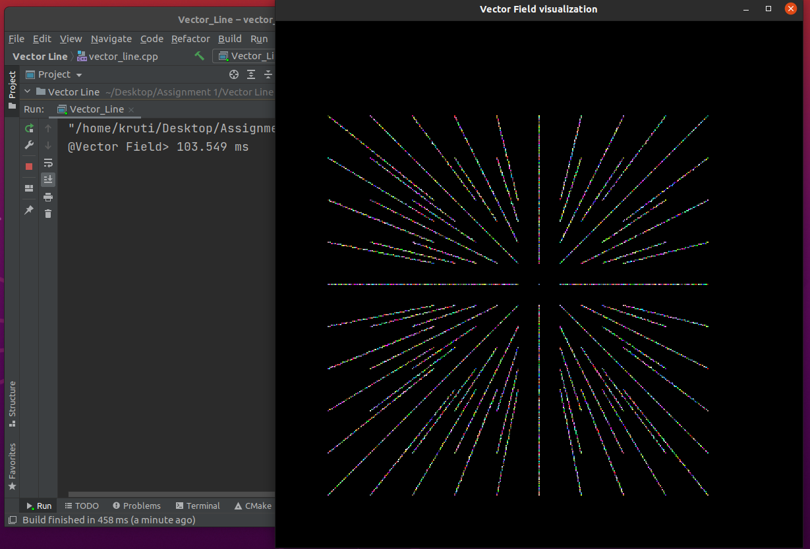

Remarks: Time reduced by 10-fold when sampling rate and limits were reduced.

Test-3
Vector Field: F(X,Y)= (X,Y)
Limits: -100 to 100 on X and Y axes both
Sampling rate: 20
Time taken:103.549ms
Remarks: Change in limits has a greater impact on running time than sampling rate.
Test-4
Vector Field: F(X,Y)= (Y,-X)
Limits: -500 to 500 on both axes
Sampling rate: 25
Time taken:1224ms
Remark: Two similar linear vector fields with same constraints run in almost same time.
Test-5
Vector Field: F(X,Y)= (Y,-X)
Limits: -250 to 250 on both axes
Sampling rate: 50
Time taken: 190.061ms
Remarks:Time reduced by 10-fold when sampling rate and limits were reduced.
Test-6
Vector Field: F(X,Y)= (Y,-X)
Limits: -100 to 100 on X and Y axes both
Sampling rate: 20
Time taken: 103.398ms
Remarks:Change in limits has a greater impact on running time than sampling rate.
Test-7
Vector Field: F(X,Y)= (Y,-X)
Limits:-100 to 100 on X and Y axes both
Sampling rate: 20
World Window size: 800x800
Viewport window size: 1000x1000
Viewport initial coordinates: (200,200)
Time taken: 103.46ms
Remarks: When size of field is almost same in world and viewport, then running time is almost same.
Test-8
Vector Field: F(X,Y)= (Y,X)
Limits: -500 to 500 on both axes
Sampling rate: 50
Time taken: 1140.05ms
Test-9
Vector Field: F(X,Y)= (Y,X)
Limits:
Sampling rate:
Time taken: 178.724ms
Remarks: Time reduced by 10-fold when sampling rate and limits were reduced.
Test-10
Vector Field: F(X,Y)= (Y,X)
Limits:-100 to 100 on X and Y axes both
Sampling rate: 20
Time taken:103.382ms
Remarks: Change in limits has a greater impact on running time than sampling rate.
Test-11
Vector Field: F(X,Y)= (X3-9X , Y3-9Y)
Limits: -100 to 100 on X and Y axes both
Sampling rate: 20
Time taken: 3783.4ms
Remarks: Running time of algorithm significantly increases for non-linear fields as compared to linear.
Test-12
Vector Field: F(X,Y)= (X3-9X , Y3-9Y)
Limits: -100 to 100 on X and Y axes both
World Window size: 800x800
Viewport window size: 1000x1000
Viewport initial coordinates: (200,200)
Sampling rate: 20
Time taken: 3739ms
Remarks: Since size of viewport > size of window, field gets clipped.
Test-13
Vector Field: F(X,Y)= (X3-9X , Y3-9Y)
Limits:-100 to 100 on X and Y axes both
Sampling rate: 20
World Window size: 1000x1000
Viewport window size: 500x500
Viewport initial coordinates: (200,200)
Time taken: 3900ms
Remarks: When field in world coordinates is smaller than that in viewport, it increases running time. This is due to stretching of vectors and hence more rendering.